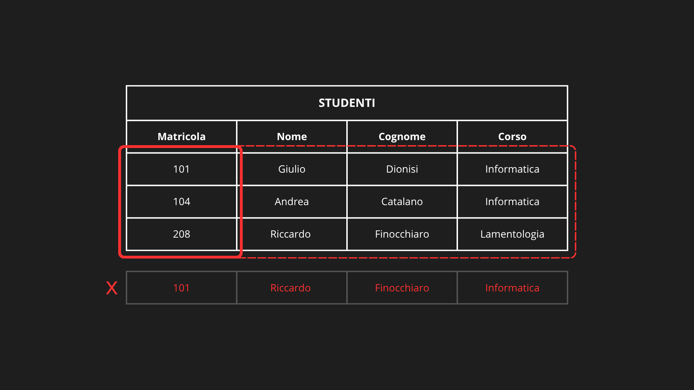
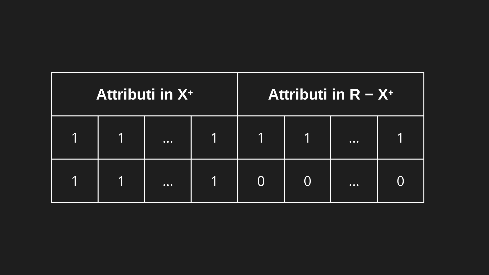
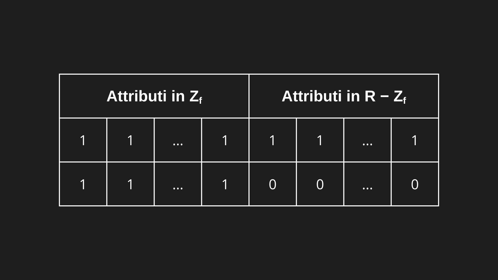

Le dipendenze funzionali descrivono relazioni logiche tra attributi di una tabella (relazione) e sono fondamentali per la progettazione corretta delle basi di dati relazionali.
DEFINIZIONE
Una dipendenza funzionale tra due insiemi di attributi X → Y significa che:
In ogni istanza valida della relazione, a ogni valore di X corrisponde uno e un solo valore di Y.
In altre parole, X determina Y.
Se due tuple hanno lo stesso valore per X, devono avere anche lo stesso valore per Y.
Una relazione (cioè una tabella) soddisfa una dipendenza funzionale X → Y quando, in ogni suo stato possibile, non esistono due tuple (righe) che abbiano lo stesso valore negli attributi di X ma valori diversi negli attributi di Y. Deve quindi soddisfare:
Applicabilità:
La dipendenza X → Y ha senso solo se X e Y sono insiemi di attributi dello schema R (cioè nomi di colonne presenti nella tabella).
Condizione logica:
Per tutte le coppie di tuple t1 e t2 nell’istanza di relazione r :
Tradotto:
Se due righe hanno gli stessi valori per gli attributi di X, devono per forza avere gli stessi valori per gli attributi di Y.
Esempio:
Proviamo ad applicare una dipendenza funzionale sulla relazione Studenti(Matricola, Nome, Cognome, Corso), e vediamo se sono soddisfatte applicabilità e condizione logica:

Qui vale Matricola → Nome, Cognome, Corso perché; Applicabilità: soddisfatta in quanto tutti gli attributi di X (Matricola) e di Y (Nome, Cognome, Corso) si trovano in R. Condizione logica: soddisfatta in quanto non esistono due o più tuple con stessa Matricola e Nome, Cognome, Corso diversi, ad esempio: dove Matricola =101, i valori di Nome, Cognome e Corso coincidono in tutte le tuple (Giulio, Dionisi, Informatica). Non varrebbe se comparisse una tupla (101, Riccardo, Finocchiaro, Informatica): stessa Matricola, ma Nome e Cognome diversi, dunque è una violazione.
ASSIOMI DI ARMSTRONG
Le regole di Armstrong sono un insieme di assiomi che permettono di dedurre tutte le dipendenze funzionali implicite da un insieme F. Sono fondamentali per il calcolo della chiusura e per la progettazione logica delle basi di dati.
Riflessività (reflexivity)
Se Y ⊆ X, allora
Significato: un insieme di attributi determina sempre se stesso o un suo sottoinsieme.
Esempio:
Se X = AB, allora vale: AB → A, AB → B.
Aumento (Augmentation)
Se X → Y, allora per ogni insieme di attributi Z:
Esempio:
Se B → AD e nello schema R ho anche l’attributo C, allora vale: BC → ACD.
Transitività (Transitivity)
Se X → Y e Y → Z, allora
Esempio:
Se B → AD e AD → C, allora vale: B → C.
REGOLE DERIVATE
Dagli assiomi di Armstrong si possono derivare altre regole regole secondarie come conseguenze logiche degli assiomi:
Unione (Union / Additivity)
Se X → Y e X → Z, allora
Dimostrazione:
Se X → Y allora per aumento: XX → YX, che equivale a scrivere X → YX (insiemi). Analogamente, se X → Z allora per aumento: XY → YZ. Quindi, poiché X → YX e XY → YZ, per transitività: X → YZ.
Decomposizione (Decomposition / Projectivity)
Se X → YZ, allora
Dimostrazione:
Poiché Y ⊆ YZ, allora per riflessività: YZ → Y. Dunque applicando la transitività a X → YZ e YZ → Y ricaviamo X → Y. Analogamente, poiché Z ⊆ YZ allora per riflessività; YZ → Z. Dunque applicando la transitività a X → YZ e YZ → Z ricaviamo X → Z.
Pseudo-Transitività
Se X → Y e YZ → W, allora
Dimostrazione:
Se X → Y allora per aumento: XZ → YZ. Quindi, poiché XZ → YZ e YZ → W, per transitività: XZ → W.
CHIUSURA SEMANTICA
Uno schema di relazione R = {A1, A2, …, An} ricordiamo essere l’insieme di attributi di una relazione. Dunque possiamo scrivere l’insieme F di tutte le DF conosciute nello schema R come:
Dato uno schema di relazione R e un insieme di dipendenze funzionali F su R, definiamo F+ l’insieme di tutte le dipendenze funzionali che si possono dedurre logicamente da F. Quindi F+ è l’insieme di tutte le dipendenze funzionali che sono soddisfatte da ogni istanza legale di R: contiene sia le DF già presenti in F (infatti F ⊆ F+) che le DF che si possono dedurre da F usando gli assiomi di Armstrong.
Esempio:
Schema: R = { A, B, C } Insieme minimale delle dipendenze funzionali su R: F = { A → B, B → C } Chiusura di F: F+ = { A → B, B → C, A → C, A → A, B → B, C → C }
Qui A → C è implicita, quindi non serve inserirla in F per rendere l’istanza legale: basta F.
CHIUSURA SINTATTICA
Sia F un insieme di DF su uno schema R. Denotiamo con FA l’insieme ottenuto a partire da F chiudendo ricorsivamente usando solo gli assiomi di riflessività, aumento e transitività (chiusura sintattica di F). Si può dimostrare che:
Cioè che la chiusura F+ di un insieme di dipendenze funzionali F può essere ottenuta a partire da F applicando ricorsivamente solo gli assiomi di Armstrong. (Questo teorema stabilisce che le dipendenze vere in tutte le istanze legali rispetto a F coincidono esattamente con quelle ottenibili applicando gli assiomi di Armstrong).
Dunque definiamo FA nel seguente modo:
- se f ∈ F allora f ∈ FA (F ⊆ FA)
- se Y ⊆ X ⊆ R allora X → Y ∈ FA (assioma della riflessività)
- se X → Y ∈ FA allora XZ → YZ ∈ FA , per ogni Z ⊆ R (assioma dell’aumento)
- se X → Y ∈ FA e Y → Z ∈ FA allora X → Z ∈ FA (assioma della transitività)
Dimostrazione:
Dimostriamo l’uguaglianza F+= FA dimostrando la doppia inclusione:
Prima inclusione:
Dimostriamo che FA ⊆ F+:
“Tutte le dipendenze funzionali che si possono verificare con gli assiomi di Armstrong (∈ FA) sono anche vere in ogni istanza legale (∈ F+)”.
Indichiamo con Fj l’insieme delle dipendenze funzionali ottenute dopo j applicazioni degli assiomi di Armstrong a partire da F. Quindi: F0 = F … F1 = tutte le dipendenze ottenute da F0 applicando una volta uno qualsiasi dei tre assiomi… F2 = tutte quelle ottenute applicando ancora una volta uno qualsiasi dei tre assiomi su F1… e così via. L’unione di tutti questi insiemi costituisce FA:
In altre parole, FA è il risultato di applicare ricorsivamente gli assiomi di Armstrong fino a chiusura cioè finché non si ottengono più nuove dipendenze.
Caso base (j = 0):
Per definizione, tutte le dipendenze in F appartengono a F+, perché F+ è l’insieme di tutte le dipendenze implicate da F. Caso base verificato.
Ipotesi induttiva:
Si assume che tutte le dipendenze ottenute con al più j applicazioni degli assiomi di Armstrong siano già in F+.
Passo induttivo (j > 0):
Bisogna mostrare che anche ogni dipendenza in Fj+1 è ottenuta applicando una sola volta in più uno dei tre assiomi di Armstrong su dipendenze già contenute in Fj.
Ora si considerano i tre casi in cui la nuova X → Y può essere stata ottenuta:
Caso 1:
X → Y è stata ottenuta mediante l’assioma della riflessività, in tal caso Y ⊆ X.
Sia r un’istanza di R e siano t1 e t2 due tuple di r tali che:
Per l’ipotesi induttiva, da Y ⊆ X e X → Y segue che:
Dunque X → Y, se ottenuta per riflessività, è una dipendenza logicamente vera (valida in ogni relazione), cioè appartiene a F+.
Caso 2:
X → Y è stata ottenuta applicando l’assioma dell’aumento ad una dipendenza funzionale V → W in FA, che a sua volta è stata ottenuta applicando ricorsivamente gli assiomi di Armstrong un numero di volte ≤ j−1 (quindi per ipotesi induttiva, V → W ∈ F+).
Dunque si ha X = VZ e Y = WZ per qualche insieme di attributi Z ∈ R.
Sia r un’istanza di R e siano t1 e t2 due tuple di r tali che:
Dato che r è legale e X = VZ si ha anche:
E per ipotesi induttiva, da V → W ∈ F+ segue che:
Unendo:
otteniamo:
Dunque X → Y (VZ → WZ), se ottenuta per aumento su V → W ∈ F+, allora è una dipendenza logicamente vera (valida in ogni relazione), cioè appartiene a F+.
Caso 3:
X → Y è stata ottenuta applicando l’assioma della transitività a due dipendenze funzionali X → Z e Z → Y in FA, ottenute a loro volta applicando ricorsivamente gli assiomi di Armstrong un numero di volte ≤ j−1 (quindi per ipotesi induttiva, X → Z e Z → Y ∈ F+).
Sia r un’istanza di R e siano t1 e t2 due tuple di r tali che:
Per l’ipotesi induttiva, da X → Z ∈ F+ segue che:
E, sempre per l’ipotesi induttiva, da Z → Y ∈ F+ segue che:
Dunque X → Y, se ottenuta per transitività su X → Z e Z → Y ∈ F+, allora è una dipendenza logicamente vera (valida in ogni relazione), cioè appartiene a F+.
Conclusione:
In tutti i tre casi (riflessività, aumento, transitività), la nuova dipendenza X → Y ottenuta da quelle precedenti risulta logicamente implicata da F. Quindi per induzione:
Seconda inclusione:
Dimostriamo che F+⊆ FA:
“Ogni dipendenza funzionale logicamente vera rispetto a F (∈ F+) è anche deducibile sintatticamente tramite gli assiomi di Armstrong (∈ FA)”.
Supponiamo per assurdo che esista una dipendenza funzionale
Useremo una particolare istanza legale di R per dimostrare che questa supposizione porta ad una contraddizione.
Costruzione dell’istanza r :
Per arrivare alla contraddizione, si costruisce un’istanza artificiale r dello schema R con solo due tuple, così:

Le due tuple sono uguali su tutti gli attributi di X+, ma diverse su tutti gli altri attributi (R − X+). Questa costruzione serve per “testare” la validità delle dipendenze:- Se una dipendenza ha il determinante (parte sinistra) tutto dentro X+, allora le due tuple avranno gli stessi valori su quella parte.
- Se ha il determinato (parte destra) almeno un attributo fuori da X+, allora le due tuple avranno valori diversi su quella parte.
Verifica della legalità di r :
Ora bisogna mostrare che r soddisfa tutte le dipendenze in F (cioè è legale).
Supponiamo per assurdo che una dipendenza di F, ad esempio V → W, non sia soddisfatta da r.
Affinché ciò accada le due tuple devono essere:
- Uguali su V: significa che V ⊆ X+ (perché le tuple coincidono proprio su X+);
- Diverse su W: quindi W ∩ (R − X+) ≠ ∅ (cioè W contiene almeno un attributo non in X+).
Tuttavia: se V ⊆ X+, dal Lemma sappiamo che X → V ∈ Fᴬ, e siccome anche V → W ∈ F ⊆ Fᴬ, per transitività otteniamo X → W ∈ Fᴬ. Sempre dal Lemma, questo implicherebbe W ⊆ X+, che contraddice la condizione W ∩ (R − X+) ≠ ∅. Abbiamo dimostrato per assurdo che: tutte le dipendenze in F sono soddisfatte da r (r è legale).
Verifica della contraddizione finale:
Ora, siccome X → Y ∈ F⁺, significa che tutte le istanze legali, compresa r, devono soddisfarla. Ma osserviamo r :
{kind=link}
- Le due tuple coincidono su X (perché X ⊆ X+ per riflessività).
- Dunque devono coincidere anche su Y, se r soddisfa X → Y (per la definizione di dipendenza funzionale).
Questo implica che Y ⊆ X+ (cioè gli attributi di Y sono determinati da X, per la definizione di X+). Ma dal Lemma precedente, Y ⊆ X+ ⇔ X → Y ∈ Fᴬ. Ecco dunque la contraddizione: Avevamo assunto inizialmente che:
Ma abbiamo appena dimostrato che:
Conclusione:
Arrivando alla contraddizione precedente abbiamo dimostrato per assurdo che:
Conclusione finale:
Dimostrando per induzione che FA ⊆ F+ e per assurdo che F+ ⊆ FA siamo arrivati alla conclusione che:
CHIUSURA DI UN INSIEME DI ATTRIBUTI
Siano R uno schema di relazione, F un insieme di dipendenze funzionali su R e X un sottoinsieme di attributi di R. La chiusura di X rispetto ad F, denotata con X+F (o semplicemente X+, se non sorgono ambiguità) è definita nel modo seguente:
In pratica X+ è l’insieme contenente tutti gli attributi Ai determinati da X usando le dipendenze funzionali in F+.
Lemma 1:
Sia R uno schema di relazione e F un insieme di dipendenze funzionali.
Allora:
Cioè:
“X determina Y” se e solo se tutti gli attributi di Y appartengono alla chiusura X+ di X” (dopotutto X+ è proprio l’insieme degli attributi determinati da X).
Dimostrazione:
1. Se X → Y ∈ FA allora Y ⊆ X+ (⇒): Supponiamo che X → Y ∈ FA. Per la regola della decomposizione, da X → Y segue che: X → Ai ∈ FA per ogni attributo Ai ∈ Y. Per definizione di chiusura X+, per ogni Ai ∈ Y:
Quindi Y ⊆ X+.
2. Se Y ⊆ X+ allora X → Y ∈ FA (⇐): Supponiamo che Y ⊆ X+. Per definizione di chiusura X+, per ogni Ai ∈ Y:
Per la regola dell’unione da tutte le singole dipendenze X → A1, X → A2, …, X → An segue che: X → A1 A2 … An = Y. Quindi X → Y ∈ FA.
Calcolo di X+:
Il calcolo di X+ è utile per verificare se una dipendenza funzionale X → Y appartiene ad F+. Infatti dal lemma: X → Y ∈ FA ⇔ Y ⊆ X+ e abbiamo dimostrato anche che FA= F+. Per calcolare X+ possiamo utilizzare un algoritmo noto.
Algoritmo calcolo X+:
begin
Z := X
S := { A | (Y → V ∈ F) ∧ (A ∈ V) ∧ (Y ⊆ Z) }
while S ⊄ Z do:
begin
Z := Z ∪ S
S := { A | (Y → V ∈ F) ∧ (A ∈ V) ∧ (Y ⊆ Z) }
end
end- Input: uno schema R, un insieme di dipendenze funzionali F su R, un sottoinsieme X di R.
- Output: la chiusura X+ di X rispetto ad F (restituita nella variabile Z).
Idea di base:
Partiamo dagli attributi di X e cerchiamo iterativamente di aggiungere a X+ tutti gli attributi che possono essere determinati usando le DF di F. Il processo termina quando non possiamo più aggiungere nulla.
N.B. l’algoritmo calcola X+ usando solo le dipendenze di F, perché è garantito che applicando gli assiomi di Armstrong su F si ottiene implicitamente tutto ciò che c’è in F+.
Inizializzazione:
Z sarà la variabile che contiene X+.
Z := XAll’inizio conosciamo solo che X determina se stesso (per riflessività), quindi X ⊆ X+.
Scelta delle DF applicabili:
S è l’insieme degli attributi che possiamo ricavare da F usando ciò che abbiamo già in Z
S := { A | (Y → V ∈ F) ∧ (A ∈ V) ∧ (Y ⊆ Z) }Aggiungo ad S l’attributo A tale che:
- Y → V ∈ F: stiamo considerando una dipendenza funzionale in F.
- Y ⊆ Z: l’insieme Y dei determinanti è già contenuto in Z (X+), quindi è applicabile.
- A ∈ V: A deve far parte dell’insieme V dei determinati.
Ciclo di espansione:
while S ⊄ Z do:Se S contiene attributi non ancora in Z, allora possiamo espandere Z.
Z := Z ∪ SAggiungiamo S a Z.
S := { A | (Y → V ∈ F) ∧ (A ∈ V) ∧ (Y ⊆ Z) }Ricalcoliamo S, perché ora abbiamo nuovi attributi in Z e potrebbero essere applicabili nuove dipendenze funzionali.
Continuiamo finché S non aggiunge più nulla (cioè S ⊆ Z).
Esempio:
Vogliamo calcolare la chiusura AB+ di AB nel seguente schema:
Input: R = ABCDEHL F = { AB → C, B → D, AD → E, CE → H }
Z = AB per riflessività. S = { A | (Y → V ∈ F) ∧ (A ∈ V) ∧ (Y ⊆ AB) } Aggiungo ad S tutti gli attributi che posso determinare da AB: AB → C B → D S = CD.
S ⊆ Z ?: CD ⊄ AB, quindi entro nel ciclo: Z = AB ∪ S = ABCD. S = { A | (Y → V ∈ F) ∧ (A ∈ V) ∧ (Y ⊆ ABCD) } Aggiungo ad S tutti gli attributi che posso determinare da ABCD: AB → C, B → D AD → E S = CDE.
S ⊆ Z ?: CDE ⊄ ABCD, quindi entro nel ciclo: Z = ABCD ∪ S = ABCDE. S = { A | (Y → V ∈ F) ∧ (A ∈ V) ∧ (Y ⊆ ABCDE) } Aggiungo ad S tutti gli attributi che posso determinare da ABCDE: AB → C, B → D, AD → E CE → H S = CDEH.
S ⊆ Z ?: CDEH ⊄ ABCDE, quindi entro nel ciclo: Z = ABCDE ∪ S = ABCDEH. Aggiungo ad S tutti gli attributi che posso determinare da ABCDEH: AB → C, B → D, AD → E, CE → H Non ci sono nuove DF. S = CDEH.
S ⊆ Z ?: CDEH ⊆ ABCDEH, quindi esco dal ciclo.
Output: AB+ = Z = ABCDEH.
Teorema sulla validità dell’algoritmo calcolo X+:
L’algoritmo calcola correttamente la chiusura X+ di un insieme di attributi X rispetto ad un insieme F di dipendenze funzionali.
Dimostrazione:
Indichiamo con Z0 il valore iniziale di Z (Z0 = X) e con Zj ed Sj, con j ≥ 1, i valori di Z ed S dopo la j-esima esecuzione del corpo del ciclo. Facile vedere che, per ogni j:
Ricorda: In Zj ci sono gli attributi aggiunti a Z fino alla j-esima iterazione. Alla fine di ogni iterazione aggiungiamo qualcosa a Z da S, ma non eliminiamo mai nessun attributo in Z.
Sia f tale che Sf ⊆ Zf (cioè Zf = valore di Z al termine dell’algoritmo = X+), dimostriamo che:
1. Se A ∈ Zf allora A ∈ X+ (⇒):
Caso base (j = 0):
Per riflessività, tutti gli attributi in X appartengono a X+, perché X+ è l’insieme di tutti gli attributi determinati a partire da X. Caso base verificato.
Ipotesi induttiva:
Si assume che tutti gli attributi ottenuti con al più j - 1 iterazioni dell’algoritmo siano già in X+.
Passo induttivo (j > 0):
Sia A un attributo in Zj - Zj-1 (ovvero aggiunto a Z durante la j-esima iterazione): Deve esistere, secondo l’algoritmo, una dipendenza Y → V ∈ F tale che Y ⊆ Zj-1 e A ∈ V. Poiché Y ⊆ Zj-1, allora per l’ipotesi induttiva: Y ⊆ X+. Pertanto, per il lemma: Y ⊆ X+ ⟹ X → Y ∈ FA. Per transitività: Se X → Y ∈ FA e Y → V ∈ F, allora X → V ∈ FA. Pertanto, sempre per il lemma: X → V ∈ FA ⟹ V ⊆ X+. Dunque, in quanto A ∈ V e V ⊆ X+, allora A ∈ X+, per ogni A ∈ Zj - Zj-1. Abbiamo quindi dimostrato che Zj - Zj-1 ⊆ X+. Sapendo anche che, per l’ipotesi induttiva, Zj-1 ⊆ X+, possiamo affermare che:
2. Se A ∈ X+ allora A ∈ Zf (⇐):
Costruzione dell’istanza r :
Per poter dimostrare, si costruisce un’istanza artificiale r dello schema R con solo due tuple, così:

Le due tuple sono uguali su tutti gli attributi di Zf, ma diverse su tutti gli altri attributi (R − Zf).Verifica della legalità di r :
Ora bisogna mostrare che r soddisfa tutte le dipendenze in F (cioè è legale). Data una qualsiasi dipendenza funzionale V → W in F:
Ricorda: Una dipendenza funzionale V → W in F è violata se t1[V] = t2[V] e t1[W] ≠ t2[W].
Se V ⊄ Zf allora t1[V] ≠ t2[V] perché c’è almeno un attributo di V in R − Zf cioè V ∩ (R − Zf) ≠ Ø e quindi la dipendenza è soddisfatta.
Se V ⊆ Zf allora t1[V] = t2[V] quindi: se le due tuple avessero valori diversi su W, cioè W ∩ (R − Zf) ≠ Ø la dipendenza non sarebbe soddisfatta (t1[W] ≠ t2[W]). Allo stesso tempo però si avrebbe anche che Sf ⊄ Zf, ovvero Zf non sarebbe il valore finale di Z (ma questo è in contraddizione con la nostra costruzione dell’istanza) infatti: L’algoritmo costruisce Sf (l’insieme S all’ultima iterazione) come:
Ricorda: Sf contiene tutti gli attributi che devono essere aggiunti a Z perché derivano da DF applicabili a Zf.
Normalmente Sf ⊆ Zf quindi non si dovrebbe avere una nuova iterazione e l’algoritmo dovrebbe terminare restituendo Zf. Tuttavia in questo caso, prendendo A in W ∩ (R − Zf) ≠ Ø:
Dato che V ⊆ Zf in questo caso è vero, V → W sarebbe applicabile, quindi A dovrebbe entrare in Sf. Di conseguenza Sf ⊄ Zf, quindi A entrerebbe in Z all’iterazione successiva (Zf+1): Ma abbiamo scelto Zf come valore finale di Z, quindi per forza: Sf ⊆ Zf, siamo giunti a una contraddizione.
Quindi la dipendenza V → W in F è soddisfatta anche quando le due tuple hanno valori uguali su V, e dunque l’istanza è legale.
Verifica che A ∈ Zf:
Abbiamo già mostrato che l’istanza r costruita è legale, cioè soddisfa tutte le dipendenze funzionali in F e quindi anche tutte le dipendenze in F+.
Ora consideriamo la dipendenza funzionale che ci interessa:
Poiché r è legale, tutte le DF in F+ devono valere nell’istanza, quindi anche X → A, verifichiamo: Per l’algoritmo:
E nella nostra costruzione le due tuple t1 e t2 sono uguali su tutti gli attributi di Zf. Dunque:
Quindi nell’istanza r le due tuple concordano sul determinante X. Poiché r è legale, deve soddisfare anche:
Questo (data la costruzione di r) è possibile solo se A ∈ Zf, in quanto se A ∈ R - Zf avremmo t1[A] ≠ t2[A] e X → A ∈ F+ non sarebbe soddisfatta. Quindi A ∈ X+ ⇒ A ∈ Zf è dimostrato.
{kind=link}
CHIAVI
Dati uno schema di relazione R e un insieme di dipendenze funzionali F, un insieme di attributi K ⊆ R è una chiave di R se soddisfa due condizioni:
Unicità:
Significa che K determina tutti gli attributi di R, cioè conoscendo i valori di K posso ricostruire l’intera tupla. K è superchiave.
Minimalità:
Non esiste un sottoinsieme proprio K’ di K tale che:
Significa che nessun attributo di K è ridondante.
- Se togli anche solo un attributo, K non determina più tutto R.
- In questo caso, K è chiave candidata (cioè una superchiave minimale).
- Tutte le superchiavi singleton (che contengono esattamente un elemento) sono minimali.
Identificare le chiavi di uno schema:
Si utilizza il calcolo della chiusura di un insieme di attributi per determinare le chiavi di uno schema R su cui è definito un insieme di dipendenze funzionali F:
Procedimento:
Dati uno schema R e un insieme di dipendenze funzionali F:
Scelta dei candidati:
- Per ogni sottoinsieme dell’insieme dei determinanti in F, forma un candidato iniziale.
- Aggiungi ad ogni candidato gli attributi in R che non compaiono mai come determinati tra le dipendenze in F.
N.B. Dati: X = insieme generico di attributi in R. A = attributo di R che non compare mai come determinato in F. Se X non contiene A allora X+ non potrà mai contenere A (perché A non è mai apparso come determinato in F), quindi X+≠ R. Dunque qualsiasi sottoinsieme privo di A non è mai superchiave. Infatti gli attributi di R che non compaiono mai in F come determinati possono essere determinati solo per riflessività da loro stessi.
Calcolo della chiusura:
- Per ogni candidato X, calcola la sua chiusura X+ utilizzando l’algoritmo.
- Se X+ = R allora (unicità confermata): X è una superchiave.
Verifica della minimalità:
- Per ogni superchiave trovata, prova a togliere un attributo alla volta.
- Per ogni Y ⊂ X con cardinalità | X | - 1 calcola Y+ per verificare se Y è una superchiave.
- Se nessun sottoinsieme Y con cardinalità | X | - 1 determina tutto R, allora X è chiave candidata.
- Se per qualsiasi Y con cardinalità | X | - 1: Y+= R verificare la minimalità per Y, come hai fatto per X.
- Tutti i sottoinsiemi minimali di X (oppure X se è già minimale) sono chiavi candidate.
N.B. Un metodo alternativo per la fase di scelta dei candidati è il calcolo di X = R − (W − V) per ogni V → W ∈ F. Questo metodo è più sicuro e sistematico (utile se si implementa un algoritmo) ma allo stesso tempo richiede molti più calcoli (se si svolgono esercizi su carta è sconsigliato).
Esempio:
R = ABCDEGH F = { AB → D, G → A, G → B, H → E, H → G, D → H }
Scelta dei candidati:
Parto dall’insieme dei determinanti in F: AB ∪ G ∪ H ∪ D = ABDGH Cerco in R tutti gli attributi che non compaiono mai come determinati in F: solo C. Aggiungo C a tutti i sottoinsiemi di ABDGH che vado a controllare:
Calcolo della chiusura per ogni candidato:
N.B. La scelta dell’ordine dei sottoinsiemi candidati da verificare è arbitraria, anche se solitamente è consigliato iniziare dai sottoinsiemi più piccoli così da non doverne verificare la minimalità (sono sicuramente minimali). In questo esempio partiremo da ABC per mostrare anche il controllo sulla minimalità, ma ci converrebbe controllare per primi i sottoinsiemi AC, BC, DC, GC e HC.
ABC+= ABCDEGH = R quindi ABC è una superchiave di R.
Verifico se ABC è minimale analizzando i suoi sottoinsiemi:
Analizzo solo AC e BC in quanto AB non contiene C e non potrà mai essere una superchiave di R (guarda la nota):
AC+= AC quindi AC non è una superchiave di R. BC+= BC quindi BC non è una superchiave di R.
Tutti i sottoinsiemi (con cardinalità | ABC | - 1) di ABC non sono superchiavi dunque ABC è chiave candidata di R.
GC+= ABCDEGH = R quindi GC è una superchiave di R.
Verifico se GC è minimale analizzando i suoi sottoinsiemi:
Per ovvi motivi G e C da soli non possono essere superchiavi in quanto G non contiene C (guarda la nota) e C da solo non determina nulla se non se stesso (non appare in F come determinante).
Tutti i sottoinsiemi di GC non sono superchiavi dunque GC è chiave candidata di R.
Per HC e DC il procedimento è identico a quello di GC, quindi anche queste sono chiavi candidata di R. In conclusione, le chiavi candidate dello schema R sono:
ABC, GC, HC e DC.
Posso concludere qui la ricerca delle chiavi, senza il controllo di sottoinsiemi con cardinalità maggiore in quanto sicuramente conterrebbero almeno una delle chiavi già trovate (non sarebbero minimali).
DIPENDENZE PARZIALI
Un attributo A dipende parzialmente da una chiave K se: Esiste X → A ∈ F+, con A ∉ X, tale che:
- A non è un attributo primo (non appartiene a una chiave candidata di R)
- X è un sottoinsieme proprio della chiave candidata K (X ⊂ K).
N.B. Per far si che X ⊂ K la chiave K deve essere necessariamente una chiave composta (deve contenere almeno due attributi).
Esempio:
R = Esame(Matricola, CodCorso, Cognome, Nome, Data, Voto)
In questo schema l’unica chiave candidata è K = (Matricola, CodCorso).
Una dipendenza nota dello schema è: Ad ogni Matricola corrisponde un solo Cognome: Matricola → Cognome.
Analizzando questa dipendenza: Cognome (A) non è un attributo primo: Cognome ∉ K. Matricola (X) è un sottoinsieme proprio di (Matricola, CodCorso): Matricola ⊂ K.
Quindi possiamo dire che Cognome dipende parzialmente dalla chiave (Matricola, CodCorso), come conseguenza di Matricola → Cognome.
DIPENDENZE TRANSITIVE
Un attributo A dipende transitivamente da una chiave K se: Esistono K → X ∈ F+ e X → A ∈ F+, con A ∉ X, tali che:
- A non è un attributo primo (non appartiene a una chiave candidata di R)
- X NON coincide e NON è parte di una qualsiasi chiave candidata K di R (∀K ∈ R vale X ⊄ K e K - X ≠ Ø).
Quindi X è un insieme di attributi o completamente separato o che presenta solo un’intersezione con K (X contiene sempre e comunque almeno un attributo diverso da tutti gli attributi di K)
Si chiama dipendenza transitiva perché l’attributo determinato A non dipende direttamente da una chiave o superchiave, ma dipende per passaggio attraverso un altro insieme di attributi X. Dunque in simboli: se K → X e X → A, allora K → A per transitività.
Esempio:
R = Studente(Matricola, CodFiscale, Comune, Provincia)
In questo schema le chiavi candidate sono K1 = Matricola K2 = CodFiscale.
Due dipendenze note dello schema sono: Ad ogni Matricola corrisponde un solo Comune di nascita: Matricola → Comune. Un Comune si trova in una sola Provincia: Comune → Provincia.
Analizziamo queste dipendenze: Matricola (K1) determina Comune. Comune (X) non è sottoinsieme ne di Matricola ne di CodFiscale, e non coincide con nessuna delle due chiavi: X ⊄ K1, X ⊄ K2, K1 - X ≠ Ø e K2 - X ≠ Ø. Provincia (A) non è un attributo primo: Provincia ∉ K1 e Provincia ∉ K2.
Quindi possiamo dire che Provincia dipende transitivamente dalla chiave Matricola, come conseguenza di Matricola → Comune e Comune → Provincia.
INSIEMI EQUIVALENTI
Siano F e G due insiemi di dipendenze funzionali su uno schema di relazione R. Diciamo che F e G sono equivalenti (si scrive F ≡ G) se e solo se le loro chiusure coincidono, cioè:
N.B. L’equivalenza non implica che F e G contengano esattamente le stesse dipendenze. Significa invece che, pur avendo insiemi diversi, generano lo stesso insieme di conseguenze logiche (stesse dipendenze implicate).
Lemma 2:
Siano F e G due insiemi di dipendenze funzionali qualsiasi. Allora:
cioè:
“Se ogni dipendenza di F è già implicata da G (cioè appartiene a G+), allora tutto ciò che si può dedurre da F usando gli assiomi di Armstrong (F+) si può dedurre anche da G, perché G+ è chiuso rispetto a quegli stessi assiomi”.
Dimostrazione:
Ogni dipendenza in F è derivabile da G mediante gli assiomi di Armstrong. Infatti per il teorema: G+= GA, dunque se applico gli assiomi di Armstrong sulle dipendenze in G posso ottenere dipendenze in F in quanto per ipotesi: F ⊆ G+. Ovviamente, sempre per il teorema: F+= FA dunque posso ottenere dipendenze in F+ applicando gli assiomi di Armstrong ad F. Dunque se F è derivabile da G+ mediante gli assiomi e F+ è derivabile da F mediante gli assiomi, allora F+ è derivabile da G+ mediante gli assiomi, ovvero F+⊆ G+:
N.B. F+ ⊆ (F)A, F ⊆ (G+)A = G+ (monotonia) e quindi F+ ⊆ (G+)A = G+.
COPERTURA MINIMALE
Una copertura minimale è una versione “ridotta all’essenziale” di un insieme di dipendenze funzionali F. Si costruisce con un insieme G tale che:
- G è equivalente a F (cioè implica esattamente le stesse dipendenze),
- G non contiene nessuna ridondanza né a destra (determinato), né a sinistra (determinante), né come dipendenza intera.
In altre parole: è l’insieme più semplice possibile che conserva tutto il potere informativo di F. Possono esserci più coperture minimali per un dato insieme di dipendenze funzionali F.
Perché G sia una copertura minimale di F, per ogni DF in G devono valere tre proprietà:
Parte destra ridotta a singleton:
- Ogni dipendenza funzionale in G ha a come determinato un solo attributo.
- Esempio: invece di scrivere A → BC, si scrive A → B e A → C (decomposizione).
Parte sinistra non ridondante:
- In ogni dipendenza X → A, nessun attributo di X è superfluo.
- Formalmente: per nessuna dipendenza funzionale X → A in G esiste un sottoinsieme X’ ⊂ X tale che G ≡ G - {X → A} ∪ {X’ → A}, ovvero tale che X’ → A sia già implicato da G.
- Esempio: se ho AB → C, ma già A → C è implicato, allora B è ridondante e va tolto.
Dipendenza non ridondante:
- Nessuna dipendenza di G è superflua o ridondante.
- Formalmente: per nessuna dipendenza funzionale X → A in G vale G ≡ G - {X → A}.
- Ogni dipendenza di G è indispensabile per mantenere l’equivalenza G ≡ F.
Calcolo della copertura minimale di F:
Per ogni insieme di dipendenze funzionali F esiste una copertura minimale, equivalente ad F, che può essere ottenuta in tempo polinomiale in tre passi:
- Usando la regola della decomposizione, le parti destre delle dipendenze funzionali vengono ridotte a singleton. Quindi ogni dipendenza funzionale X → Y viene decomposta ricorsivamente fino a quando |Y| = 1 (il singolo attributo A). (…)
- Ogni dipendenza funzionale A1 A2… Ai-1 Ai Ai+1… An → A in F tale che: F ≡ F - { A1 A2… Ai-1 Ai Ai+1… An → A } ∪ { A1 A2… Ai-1 Ai+1… An → A } viene sostituita da A1 A2… Ai-1 Ai+1… An → A. Il processo viene ripetuto ricorsivamente su A1 A2… Ai-1 Ai+1… An → A fino a quando la dipendenza non può essere più ridotta (cioè quando tutti gli attributi del determinante risultano non ridondanti). Detto in altre parole, data X → A, se esiste un sottoinsieme V di X tale che A ⊆ V+ allora posso sostituire X → A con V → A. (…)
- Ogni dipendenza funzionale X → A in F tale che F ≡ F - {X → A} viene eliminata, in quanto risulta ridondante. Detto in altre parole, data X → A, se A ⊆ X+F - {X → A} allora posso eliminare X → A. (…)